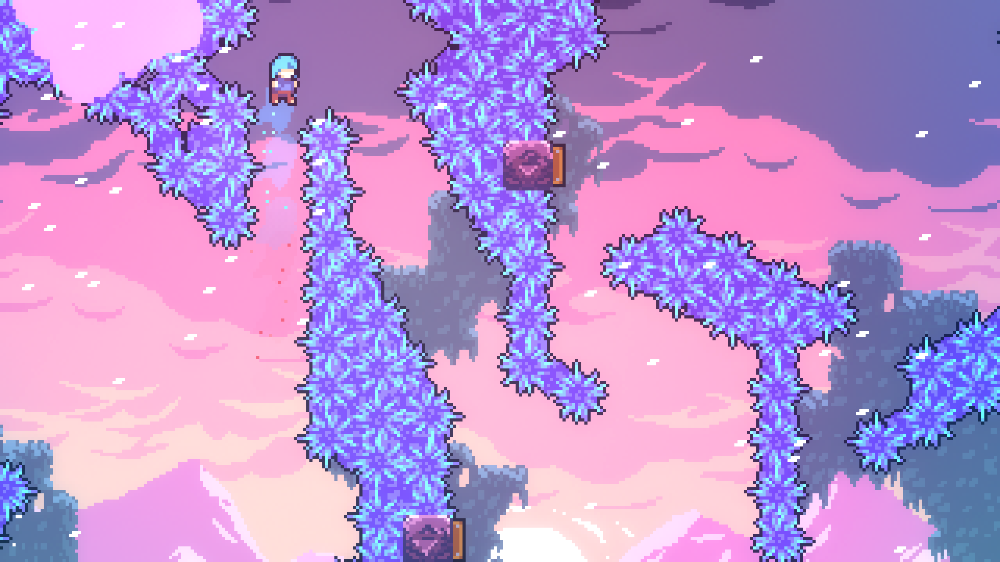
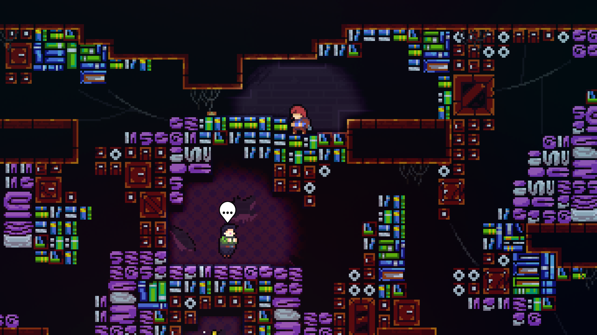
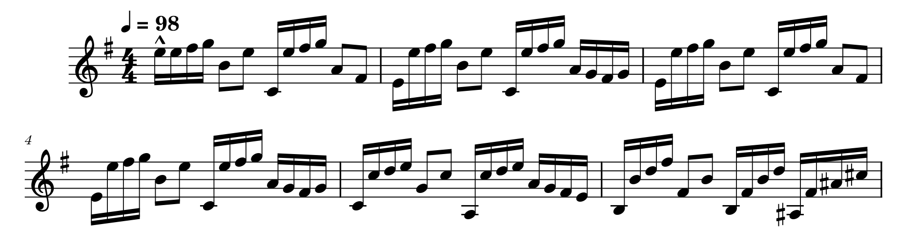
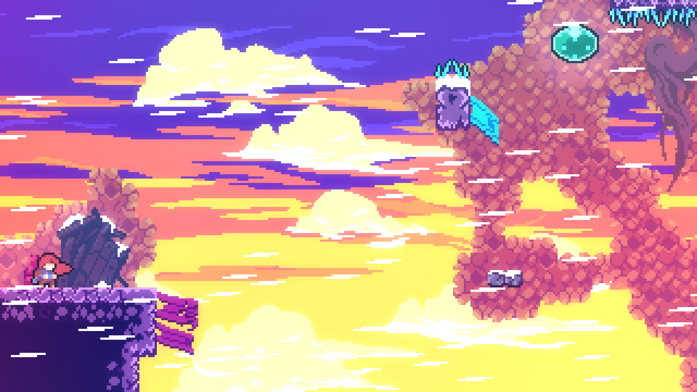
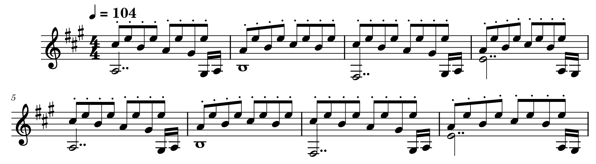
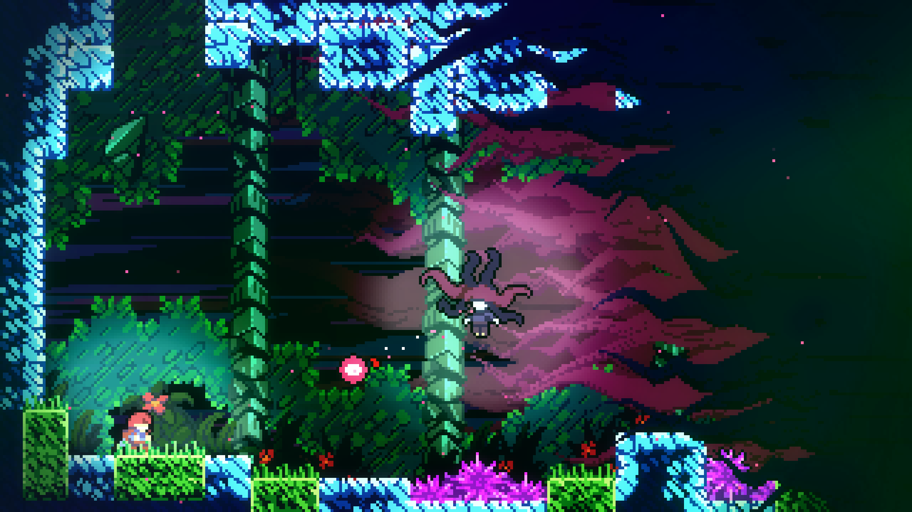
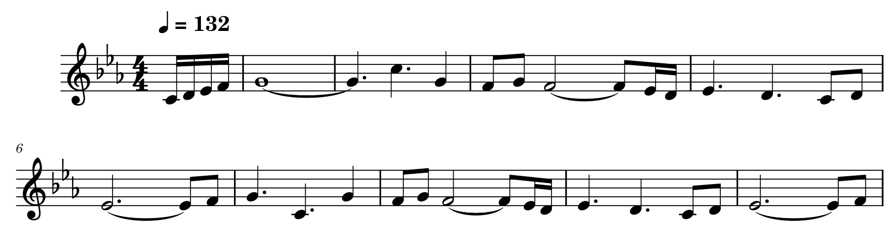
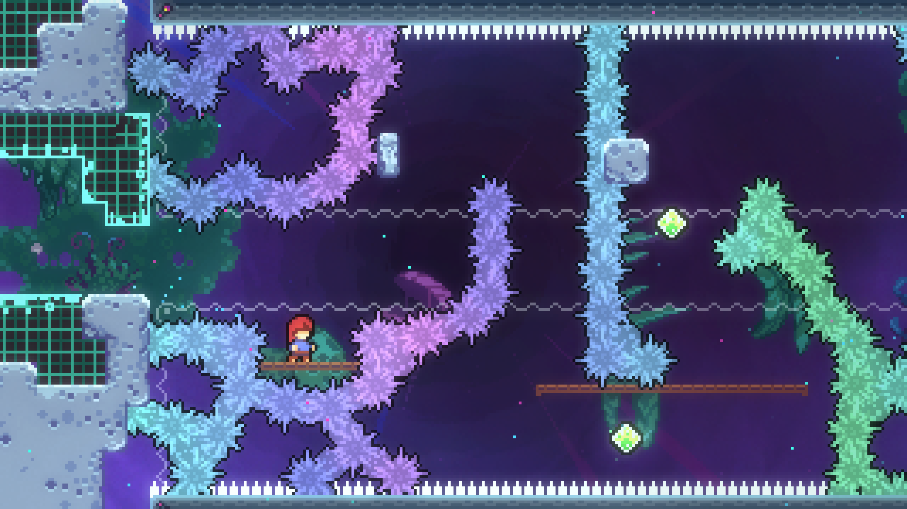
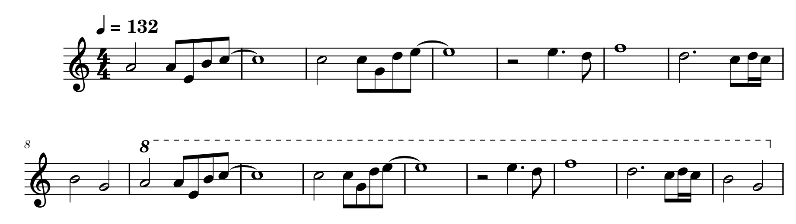

celeste.exe
Celeste
Building Intense Theming Without Creating Distractions

Like many platformer games in the indie space, Celeste becomes very mechanically complicated very quickly. Players have to devote significant concentration to moving the character in the correct way across the stage, and any distractions only serve to remove the player from the flow state that they enter in. Because of this, Celeste’s soundtrack attempts to avoid creating any sounds that might disrupt the player.
These distracting sounds, or salient events, serve an important role in most music: they draw in the listener’s attention and keep them engaged. While this serves listeners well in most genres, the Celeste soundtrack is meant to allow players to disengage from auditory processing, which it accomplishes in a few ways. One of the most simple ways that it does this is through an ostinato - a repeating pattern that often overlays other musical ideas. However, in the Celeste soundtrack, ostinatos are often the focus. In the third chapter of the game, the player is tasked with escaping a run-down hotel run by a ghost with significant emotional baggage. The soundtrack in this area accurately expresses the tension of the situation while still remaining minimal by constructing an ostinato of diminished chords, which have a tension that provides significant atmosphere to the track.


One of the more intense parts of Scattered and Lost.

While using an ostinato is definitely one of the most common ways that Celeste avoids distractions, another method used often is pure ambience. In some areas, where the game environment is more relaxed (even when the gameplay difficulty is the opposite), the game opts to let musical ideas progress slowly and sit with the listener for much longer than normal. Once the player completes each chapter in Celeste, they are given the opportunity to complete a more difficult version of the chapter, named its “B-side”. Each B-side offers a remixed version of the soundtrack found in the chapter, and in the case of the fourth chapter, which arguably has the most relaxed environment, the B-side remix progresses in a way that greatly increases the mood of the area.

The Chapter 4 B-side remix. Note the ostinato on top and the synth on the bottom.
As much as most of the game does attempt to avoid distracting the player, however, there are some sections where the soundtrack does attempt to intentionally disrupt the player or energize them to a level that distractionless music cannot. One track, heard within the game’s sixth chapter, does both. In the chapter, the player faces off against a manifestation of the parts of herself that she hates, attempting to get her to leave her life. The fight features a significant step up in difficulty from previous sections, both in technical execution and in play style, forcing the player to be significantly more aggressive than they would normally be. To reflect this shift, the music changes to a more energizing style with more salient events, like pulsating vocal tracks and sharp percussive noises.


The main melody of Confronting Myself.
In the game’s final chapter, the player is tasked with climbing a mountain that is divided into 6 distinct sections, each representing a section of the game that was played previously except for the final section, which serves as new content. During this entire chapter, only one track is played, utilizing many of the techniques previously described, but also incorporating unique sounds for each section that accurately encapsulate the section. These sounds provide a callback that makes the experience of this section much more engaging.
Chapter 1: Forsaken City
Chapter 2: Old Site
Chapter 3: Celestial Resort
Chapter 4: Golden Ridge
Chapter 5: Mirror Temple
Chapter 7: The Summit
Note: While technically represented by the first section of the chapter, Chapter 6 is skipped for story reasons and has no thematic elements present.

At the end of game’s free DLC, which is meant to be the true end of the game, there is a room which is significantly longer and harder than anything the player has experienced before. The room has its own track, which intensifies all of the techniques previously demonstrated to the maximum amount possible while still avoiding being distracting. The track successfully increases the already intense emotions that the player is feeling, especially through its use of rich harmonies.

The climax of Farewell, coupled with the climax of the entire game.
What Celeste may lack in terms of the depth of its story, it more than makes up for it in terms of its thorough and emotion-invoking theming, especially in its music. While still avoiding being excessively distracting, it manages to highlight its gameplay in a way that makes the user experience so much more endearing.
Celeste ©2018 Maddy Makes Games, Inc.